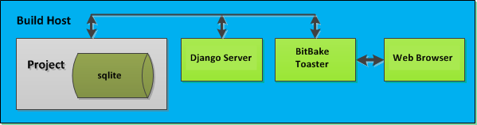
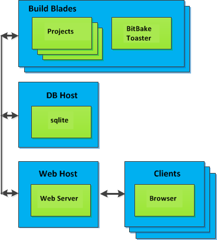

1 Introduzione
Toaster è un'interfaccia web per il OpenEmbedded Build System di Yocto Project. L'interfaccia consente di configurare ed eseguire le build. Le informazioni relative alle build vengono raccolte e memorizzate in un database. È possibile utilizzare Toaster per configurare e avviare build su più server di build remoti.
1.1 Funzionalità di Toaster
Toaster consente di configurare ed eseguire build e fornisce informazioni dettagliate sul processo di build.
Configurazione ed Esecuzione delle Build: È possibile utilizzare l'interfaccia web di Toaster per configurare e avviare le build. Le build avviate tramite l'interfaccia web di Toaster sono organizzate in progetti. Quando si crea un progetto, viene richiesto di selezionare una release, ovvero una versione del sistema di build, da utilizzare per le build del progetto. Toaster supporta le release di Yocto Project dalla 1.8 in poi. Tramite l'interfaccia web di Toaster, è possibile:
Esplorare i layer elencati nelle varie sorgenti di layer disponibili nel progetto (ad esempio, l'indice dei layer OpenEmbedded all'indirizzo https://layers.openembedded.org/).
Esplorare immagini, ricette e macchine fornite da tali layer.
Importare i propri layer per la compilazione.
Aggiungere e rimuovere layer dalla configurazione.
Impostare le variabili di configurazione.
Selezionare uno o più target da compilare.
Avviare le build.
Toaster consente inoltre di configurare ed eseguire le build [compilazioni] dalla riga di comando e di passare dalla riga di comando all'interfaccia web in qualsiasi momento. Le compilazioni avviate dalla riga di comando vengono visualizzate in un progetto Toaster speciale denominato "Command line builds" [Compilazioni da riga di comando].
Informazioni sul Processo di Build: Toaster registra anche informazioni dettagliate sulle build. Toaster raccoglie dati per le build avviate dall'interfaccia web e dalla riga di comando, a condizione che Toaster sia in esecuzione.
Nota
È necessario avviare Toaster prima della build, altrimenti non raccoglierà i dati.
Con Toaster è possibile:
Visualizzare cosa è stato compilato (ricette e pacchetti) e quali pacchetti sono stati installati nell'immagine finale.
Esplorare la struttura delle directory dell'immagine.
Visualizzare il valore di tutte le variabili nella configurazione di build e quali file impostano ciascun valore.
Esaminare i messaggi di errore, warning e trace [traccia] per facilitare il debug.
Visualizzare informazioni sui task di BitBake eseguiti e riutilizzati durante la build, incluse quelli che hanno utilizzato lo "shared state".
Visualizzare le relazioni di dipendenza tra ricette, pacchetti e task.
Visualizzare informazioni sulle prestazioni, come tempo di compilazione, tempo di esecuzione dei task, utilizzo della CPU e I/O del disco.
Per una panoramica di Toaster, guardare questo video introduttivo.
1.2 Opzioni di Installazione
È possibile configurare Toaster per l'esecuzione come istanza locale o come servizio condiviso [shared].
Quando Toaster è configurato come istanza locale, tutti i componenti risiedono su un singolo host di build. Fondamentalmente, un'istanza locale di Toaster è adatta a un singolo utente che sviluppa su un singolo host di build.


Toaster come servizio condiviso è adatto a più utenti che sviluppano su diversi host di build. Quando Toaster è configurato come servizio condiviso [shared], i suoi componenti possono essere distribuiti su più macchine:

